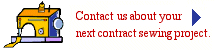

| Contact us about your next project kaiser@kaisermfginc.com 651.458.8880 |
Photo Notes: Perhaps a photo montage combining
a sepia-
toned historic shot with today's logo.
In 1960, Tom Kaiser opened a custom upholstery shop next to his family home in what is now Woodbury, Minnesota. The principal product was made-to-order upholstery items, which expanded quickly to include a wide variety of canvas fabrications, including custom boat covers, a natural for Minnesota's 10,000 lakes. The Kaiser off-spring — all of them still involved in the family business — remember growing up along side the bustling "Mom and Pop" shop.
When son, Jim, joined the family operation, he took notice of the growing need for custom sewing by manufacturing companies in the Minneapolis/St. Paul area. He concentrated on growing the contract sewing segment of the business throughout the 1970's and 80's.
In 1996, Jim bought the custom sewing business from his father, moved the operation to its current location in Newport, Minnesota, and named it KAISER Manufacturing, Inc.
Today, KAISER designs, develops and sews a vast array of components for industrial and service companies across the world — everything from soft cases to protect trade show paraphernalia to fabric ductwork for heating and air conditioning; from insulated covers for beverage cans to webbed harnesses for dog-sledding teams; from protective padding for hockey, speed skating, indoor soccer, biking and X game venues to inflatable walls for pest control; from acoustical panels to sewn components for safety helmets.
Notes: an exterior shot of the facility.
Our goal is to listen carefully to what you need, work with you to achieve a design that meets your specifications, consult with you throughout the process and deliver a sewn component with zero defects on time and within your budget.
Over the past decade, we have embraced the advanced technology and increased computing power that has revolutionized the sewing industry. Our use of the latest in computer-aided design, digitized patternmaking, computer-controlled sewing machines and an automated cutting machine ensures we deliver high-quality, cost-effective solutions for our customers.